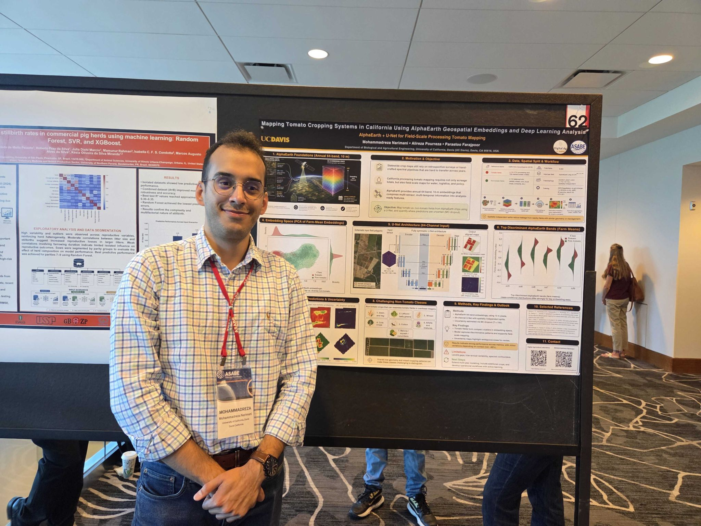
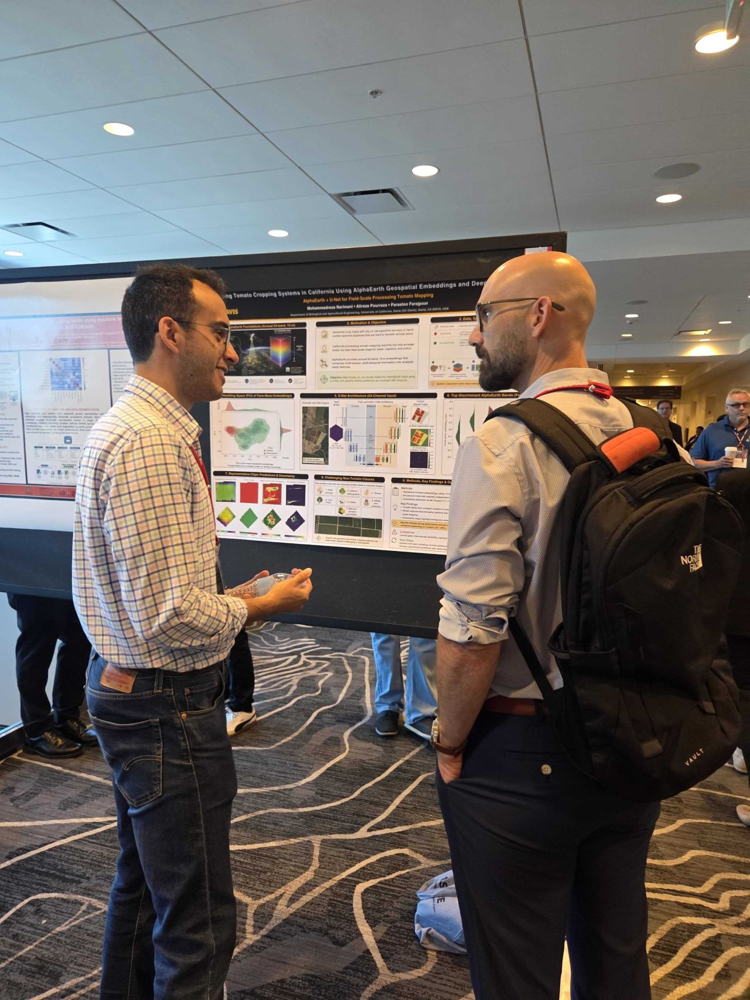
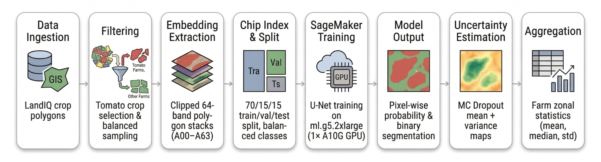
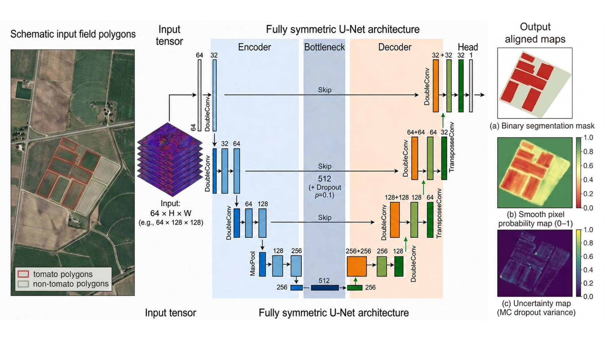
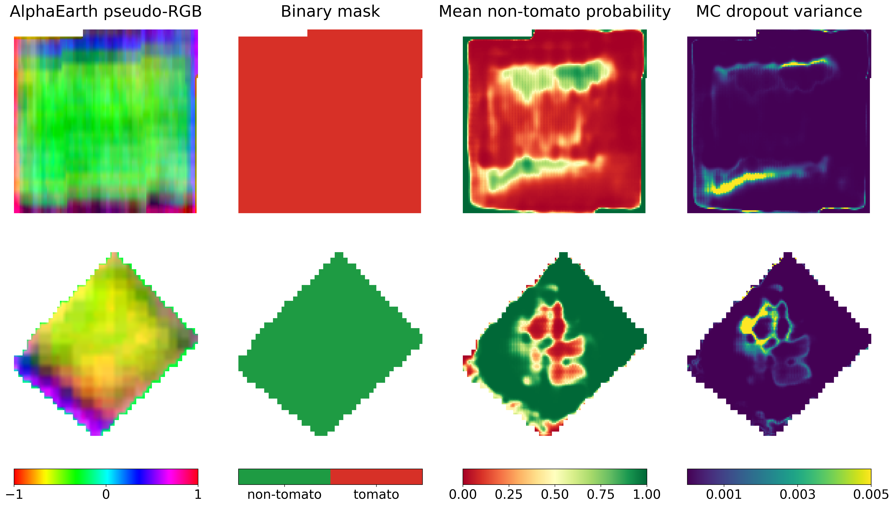
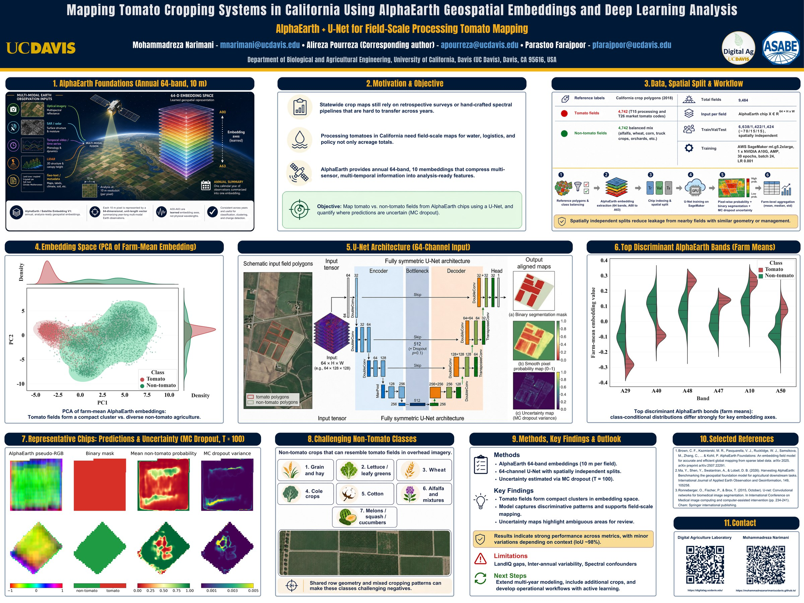

🛰️ Mapping Tomato Cropping Systems in California Using AlphaEarth Geospatial Embeddings and Deep Learning
Mohammadreza Narimani, Alireza Pourreza, and Parastoo Farajpoor
ASABE Annual International Meeting 2026 · Indianapolis, Indiana · Poster presented July 14, 2026
Digital Agriculture Laboratory · Department of Biological and Agricultural Engineering · University of California, Davis
Presented at ASABE 2026
I presented this research at the ASABE Annual International Meeting 2026 in Indianapolis, Indiana. The poster brought together geospatial foundation models, deep learning, and uncertainty-aware mapping to explore a practical question: can analysis-ready satellite embeddings identify processing tomato fields accurately at statewide scale?


Why Statewide Tomato Mapping Matters
Reliable field-scale crop maps support acreage estimation, water accounting, yield forecasting, harvest logistics, contract planning, and agricultural policy. Many statewide products are retrospective, while conventional remote-sensing pipelines often depend on cloud masking, atmospheric correction, gap filling, hand-engineered vegetation indices, and case-specific temporal features.
We tested whether Google DeepMind's AlphaEarth Foundations could provide a more direct starting point. AlphaEarth represents every 10 m pixel with a 64-dimensional annual embedding learned from multi-source Earth observation data. Instead of interpreting individual bands as physical measurements, the downstream model uses the complete embedding as an analysis-ready description of land-surface behavior.
Data and Spatially Independent Evaluation
LandIQ 2018 crop polygons provided the reference labels. We assembled a balanced dataset of 4,742 processing tomato fields and 4,742 non-tomato fields. The negative class included alfalfa, wheat, corn, beans, orchards, and other crops so the model had to learn tomato-specific patterns rather than a simple tomato-versus-one-crop contrast.
Fields were partitioned spatially before training to reduce leakage from nearby locations. The final split included 6,638 training fields, 1,422 validation fields, and 1,424 test fields. Invalid and NoData pixels were masked during both optimization and evaluation.
End-to-End Workflow
The pipeline moves from statewide crop polygons to balanced field sampling, 64-band embedding extraction, spatial splitting, cloud-based U-Net training, pixel-wise segmentation, uncertainty estimation, and field-level aggregation. Model development ran on AWS SageMaker using an NVIDIA A10G GPU.

A 64-Channel U-Net with Uncertainty Estimation
The fully symmetric U-Net accepts the complete 64 × H × W AlphaEarth tensor and produces an aligned pixel-wise probability map. The loss combines masked binary cross-entropy with soft Dice loss, balancing class discrimination with boundary overlap.
To move beyond a single hard prediction, dropout remained active during inference. Each field chip passed through the network 100 times; the predictive mean became the final soft map, while pixel-wise variance represented model uncertainty. This makes field edges, mixed pixels, and ambiguous geometry visible for review.

Results on Unseen Locations
The model retained high performance on the spatially independent test set. It accurately separated tomato fields from a diverse set of agricultural classes while tracing field boundaries with limited confusion.
| Test metric | Score |
|---|---|
| Pixel accuracy | 99.19% |
| Precision | 98.69% |
| Recall | 99.40% |
| F1 score | 99.04% |
| Intersection over Union | 98.11% |
| Chip accuracy | 99.02% |

What the Results Mean
AlphaEarth embeddings preserve crop-relevant spatial and temporal structure in a compact representation. This lets the segmentation network focus on tomato-specific field patterns and boundaries instead of first reconstructing a large preprocessing pipeline from raw observations.
The current study uses labels from one year and a balanced evaluation dataset. Future work will test multi-year labels, more crop classes, realistic statewide class imbalance, transfer beyond California, and additional tasks such as crop stress, disease, and management-zone mapping.
Explore the ASABE 2026 Poster
The full poster provides a visual summary of AlphaEarth foundations, the spatial split, embedding-space analysis, U-Net architecture, discriminant embedding bands, prediction examples, uncertainty maps, and the main findings.

Paper and Citation
Narimani, M., Pourreza, A., & Farajpoor, P. (2026). Mapping Tomato Cropping Systems in California Using AlphaEarth Geospatial Embeddings and Deep Learning Analysis. arXiv preprint arXiv:2605.21804.
Contact
Mohammadreza Narimani
PhD Candidate, University of California, Davis